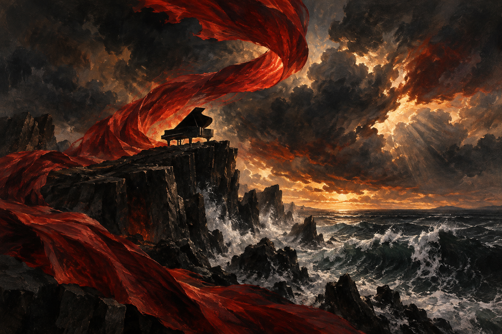

Song covers
Luma Keys · Eight original illustrations ·
Exact imagegen prompts & source files

Appassionata · III
晴天 · Sunny Day
龙卷风 · 邓紫棋版
Prelude in C major · BWV 846
First steps · C major
你离开的事实
Moonlight Sonata · I
Gymnopédie No. 1